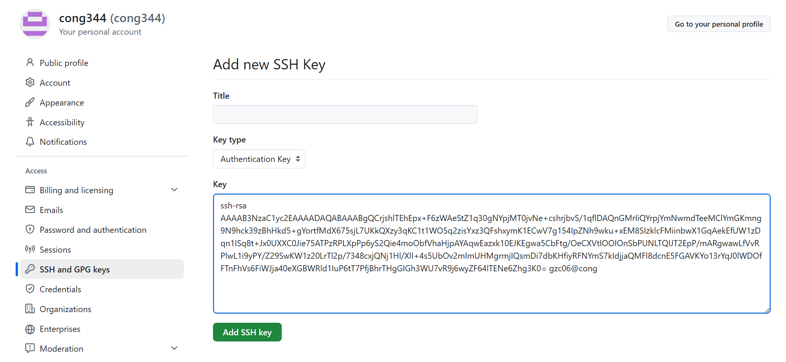
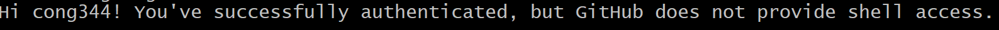
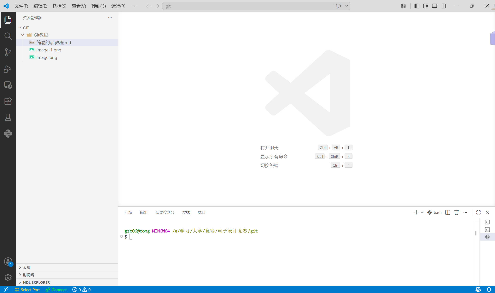
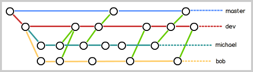

访问 Github官网 ，输入邮箱，填写用户名等信息后，即可注册自己的 Github 账号。
随后，我将发送电赛项目的协作邀请，在收到的电子邮件中点击同意即可。
访问Windows版本的 Git官网，点击 Download 后即可下载安装程序。
下载完毕后打开安装程序，基本选择默认选项即可。可以参考 知乎Github教程 中的第六部分。
安装完毕后，在桌面或Windows菜单中将有 Git Bash 软件。进入软件后输入git不报错，说明下载成功。
安装完 Git Bash 后，需要进行初始化操作。
在Git Bash中依次输入如下命令：
git config --global user.name "Your Name"
git config --global user.email "email@example.com"
其中，Your Name 是在团队协作中让他人识别你的标志，可以自拟名称。email@example.com 则填写你的邮箱。
首先，在Git Bash中生成SSH密钥。输入ssh-keygen -t rsa命令，随后需要选择具体文件。在此处，直接按回车即可，表示默认路径。按3次回车后，SSH Key生成成功。
生成的SSH Key一般位于如下路径：C:\用户\用户名\.ssh
在Github的右上角点击自己的头像，进入Settings。选择SSH and GPG Keys一项，并进入New SSH Key。
随后，无需输入标题，向Key栏中输入id_rsa.pub文件中的内容。如图所示。

连接成功后，打开Git Bash，输入ssh -T git@github.com。此时，可能要求等待继续连接，输入yes继续。
随后，出现如图所示的一行话，说明连接成功。

对于一个项目的Git操作依赖于工作区。为了方便管理，将今后的所有代码统一存放在一个工作区中。
为了方便操作，通常可以使用VSCode来操作Git。操作如下：

在VSCode终端中，输入如下指令：git clone git@github.com:cong344/LiuZiYi_2026NUEDC.git。随后，寄存在Github项目库中的所有文件将被下载到此文件夹中。
在git中，一个项目存在不同分支，称为branch。由于分支的存在，使得团队协作中不会出现混乱。分支的示意图如下所示。

master表示主分支。此分支用于最终可用的版本呈现，一般需要很谨慎的修改。dev是工作分支。主要通过此分支进行测试，将不同成员的修改合并到此分支，合并过程称为merge。clone的文件夹中，输入git switch -c name命令，创建自己的工作分支。其中，name可以自己起。git add 文件名.文件类型，add后的文件即是你在这个版本所改动的文件。随后输入命令 git commit -m "版本记录" ，其中双引号中的内容用于说明你在这个版本进行了哪些改动。git checkout dev，切换至工作分支。随后，输入 git pull origin dev，下载最新工作分支。最后，输入 git merge name，完成合并。（注意name是你自己起的名字）git push -u origin dev 即可。（注意：-u表示设置默认，下次提交 dev时直接输入 git push 即可）